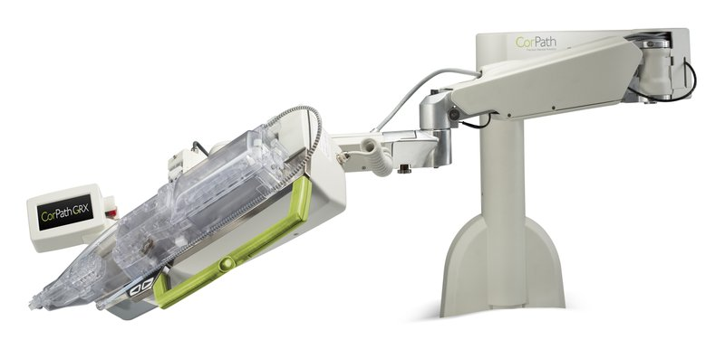

Commercial and clinical-stage systems · corpathgrx_corindus2016
CorPath GRX
CorPath 200 / CorPath GRX

1 / 7


- Family
- Commercial and clinical-stage systems (commercial)
- Devices
- GRX: guide catheter (advance 100 mm + rotate), 0.014-in guidewire, rapid-exchange balloon/stent catheter; neuro cassette: microcatheter, 0.014-in wire, coils/stents (stent/stent-retriever compatibility limited); CorPath 200: all commercial 0.014-in guidewires, rapid-exchange balloons and stent delivery systems, guide catheter positioned by hand and connected to the disposable cassette (6 F in 119, 7 F in 45 PRECISE patients) (weisz2013_safety p. 1597-1598); RAPID: 0.014-in wires and RX balloons 3-7 x 20 mm, the over-the-wire self-expanding stent delivered by hand (mahmud2016_feasibility p. 2059)
- Degrees of freedom
- 5 for GRX (gao2026_legobot Table I via S8); CorPath 200: 3, insertion and rotation of the guidewire and insertion of the stent catheter (cha2016_assembly p. 70); li2024_design Table I says 2 (conflict)
- Push
- Friction rollers
- Twist
- Rotating clamp
- Tested up to
- Human
- Sim-to-real
- None found — No simulation-trained controller found for this robot.
Testing
- Highest level
- Human
- What was tested
- PRECISE 164 pts at 9 sites, 23 operators (CorPath 200, weisz2013_safety p. 1597); RAPID peripheral 20 pts/29 lesions, single centre (Graz), 3 operators (CorPath 200, mahmud2016_feasibility); GRX PCI 980 procedures pooled; neuro: 117-pt aneurysm study (10 sites), 214 diagnostic angiographies single centre, 6 aneurysm, 4 carotid stent, 10 angio/carotid; thrombectomy only in vitro/3D-printed models
- Key numbers
- PRECISE: device technical success 162/164 (98.8%), clinical success 160/164 (97.6%), 2 conversions for stent-delivery resistance, procedure time 24.4 +- 14.1 min, fluoroscopy 11.1 +- 6.2 min, operator dose 95.2% lower in the cockpit than at the table (weisz2013_safety). RAPID: device technical success, safety and clinical procedural success 100%, 3 minor access-site haematomas, operator dose not measured (mahmud2016_feasibility). Neuro aneurysm: 110/117 (94.0%) without unplanned conversion, 117.3+-47.3 min total, 2 ruptures 2 strokes (mendespereira2024_evaluation abstract). Diagnostic cerebral angiography 214 robotic vs 636 manual: no difference in times or patient dose, conversion 39/214 (18%) (hamimi2026_learning abstract). Meta-analysis 7 neuro studies/265 pts: pooled technical success 87% (95% CI 75-96) (tan2026_corpathmeta abstract). Visceral: 16/18 (88.9%) technical success (wagenpfeil2026_visceral abstract). Automated movements on vs off 49 pts: conversion 22% vs 18% (ruggiero2026_evaluation).
Mechanism
- Push (translation)
- friction-roller
- Twist (rotation)
- clamped-wheel rotation of guidewire in single-use cassette (S8 csv)
- Device range
- N.R.
- Target anatomy
- coronary; peripheral; neurovascular (angiography, aneurysm coiling, carotid stenting; thrombectomy in vitro only)
Sensing and interface
- Force sensing
- none (ren2023_critical Table IV); CorPath 200: proximal force measurement (rafiitari2014_current Table 3); no haptic feedback
- Leader and haptics
- no: CorPath 200 radiation-shielded mobile cockpit with console joysticks or touch-screen buttons (weisz2013_safety p. 1597), 2 joysticks (mahmud2016_feasibility p. 2059); GRX control console with touch screen and three joysticks for device, guidewire and guide catheter (Corindus media-kit image Control-Console_HR.jpg)
- Imaging
- standard cath lab fluoroscopy; fluoroscopic, ECG and haemodynamic images slaved to duplicate monitors in the cockpit (weisz2013_safety p. 1597)
- Sterility
- single-use sterile cassette on the bedside arm (weisz2013_safety; mahmud2016_feasibility, cassette attached to the sheath with a Tuohy-Borst); drape not mentioned in these papers
Size
- Footprint (mm)
- N.R. (bedside arm on table rail + radiation-shielded cockpit)
- Mass (kg)
- N.R.
Simulation
- Simulation model
- none found (no public model of the robot; neuro in-vitro/3D-printed-phantom studies used the real robot: tomasello2024_modeling, kaneko2026_in, williams2025_robotic)
- Sim-trained controller
- none found; only fixed-rule automation in the product (Rotate-on-Retract, technIQ), alnooryani2018_rotate (human, 1 patient, full) - not learned; Siemens ARPA-H award 2026-08-20 aims at autonomous remote thrombectomy (press, not a result)
Versions
- Lineage
- CorPath 200 (FDA 510(k) K120834, 2012-07-19; used in PRECISE, weisz2013_safety, and in the RAPID peripheral trial, mahmud2016_feasibility); CorPath GRX (K160121, 2016-10-27; PVI 2018; PMDA 2018; neuro CE/TGA 2019-2020); neuro cassette
Sources
- 510(k) Premarket Notification K120834: CorPath 200 System (Corindus, Inc.) · link [fda2012_k120834]
- 510(k) Premarket Notification K160121: CorPath GRX System (Corindus, Inc.) · link [fda2016_k160121]
- Safety and Feasibility of Robotic Percutaneous Coronary Intervention · Journal of the American College of Cardiology, 2013 · doi:10.1016/j.jacc.2012.12.045 [weisz2013_safety]
- Robotic-Assisted Percutaneous Coronary Intervention: Final Results of the PRECISION and PRECISION GRX Studies · Journal of the Society for Cardiovascular Angiography & Interventions, 2025 · doi:10.1016/j.jscai.2025.103655 [mahmud2025_robotic]
- Feasibility and Safety of Robotic Peripheral Vascular Interventions · JACC: Cardiovascular Interventions, 2016 · doi:10.1016/j.jcin.2016.07.002 [mahmud2016_feasibility]
- First-in-human, robotic-assisted neuroendovascular intervention · Journal of NeuroInterventional Surgery, 2020 · doi:10.1136/neurintsurg-2019-015671.rep [mendespereira2020_first]
- Evaluation of effectiveness and safety of the CorPath GRX robotic system in endovascular embolization procedures of cerebral aneurysms · Journal of NeuroInterventional Surgery, 2023 · doi:10.1136/jnis-2023-020161 [mendespereira2024_evaluation]
- Robotic-Assisted versus Manual Diagnostic Cerebral Angiography: Comparative Outcomes and Learning Curve in a Large Single-Institution Cohort · American Journal of Neuroradiology, 2026 · doi:10.3174/ajnr.a9651 [hamimi2026_learning]
- Evaluating the CorPath GRX robotic system in cerebral aneurysm embolization and diagnostic angiography: a systematic review and single-arm meta-analysis · Journal of Robotic Surgery, 2026 · doi:10.1007/s11701-026-03665-2 [tan2026_corpathmeta]
- Clinical Feasibility of Robotic-Assisted Endovascular Visceral Interventions · CardioVascular and Interventional Radiology, 2026 · doi:10.1007/s00270-025-04340-z [wagenpfeil2026_visceral]
- Evaluation of the CorPath-GRX technIQ automated movements during robotic-PCI (NAVIGATE GRX study) · Cardiovascular Revascularization Medicine, 2026 · doi:10.1016/j.carrev.2025.05.027 [ruggiero2026_evaluation]
- In vitro comparison of manual and robotic endovascular thrombectomy for acute ischemic stroke · Interventional Neuroradiology, 2023 · doi:10.1177/15910199231206315 [kaneko2026_in]
- Modeling Robotic-Assisted Mechanical Thrombectomy Procedures with the CorPath GRX Robot: The Core-Flow Study · American Journal of Neuroradiology, 2024 · doi:10.3174/ajnr.A8205 [tomasello2024_modeling]
- Robotic Stroke Thrombectomy: A Feasibility and Efficacy Study in Flow Models · Journal of Stroke, 2025 · doi:10.5853/jos.2024.05057 [williams2025_robotic]
- Rotate-on-Retract Procedural Automation for Robotic-Assisted Percutaneous Coronary Intervention: First Clinical Experience · Case Reports in Cardiology, 2018 · doi:10.1155/2018/6086034 [alnooryani2018_rotate]
- Performance of a Novel Miniaturized Robotic System in Percutaneous Coronary Intervention: A Preclinical Study · Journal of the Society for Cardiovascular Angiography & Interventions, 2024 · doi:10.1016/j.jscai.2024.102148 [winsor2024_performance]
Notes
- Notes
- MARKET EXIT: Siemens Healthineers announced May 2023 it stops selling/developing CorPath for cardiology and peripheral, keeps neurovascular R&D (massdevice/dotmed, via web search summary, not opened). Installed units still reported in 2025-2026 studies. No FDA neuro clearance found; neuro cleared under CE and TGA (mendespereira2020_first). PMDA approval for PCI mid-2018 (mpo-mag 2018-07-19). Siemens+Stryker strategic partnership (2025) for robotic neurovascular system; ARPA-H AIR award up to US$31.1M over 5 y (2026-08-20, Stryker sub-awardee) for autonomous remote thrombectomy; Siemens page: under development, not commercially available. | X2 2026-11-08: PRECISE and RAPID used the CorPath 200, not the GRX (full texts). Gallery adds the GRX control console (media kit) and three paper figures.
This record
- Read level
- full — full (weisz2013_safety, mahmud2016_feasibility: CorPath 200); abstract + web (rest: S8 integration; hamimi2026, tan2026, wagenpfeil2026 abstracts via Europe PMC)
- Picture
- https://web.archive.org/web/2019id_/https://www.corindus.com/assets/images/mediakit/Extended-Reach_Arm_HR.jpg (Corindus media kit page https://www.corindus.com/news-events/media-kit, Wayback snapshot 2019-12-21) ↗ — licence: press image (Corindus media kit; image carries "Copyright (c) Corindus, Inc. All rights reserved"; credit Corindus/Siemens Healthineers in caption); grade A
- Picture changes
- cropped (350,160)-(5745,2760) of 5952x3040, which also drops the copyright line at bottom right (put the credit in the caption)
- Found by
- commercial: Search of commercial and clinical-stage systems.
- Data
- JSON · YAML:
records/robots/corpathgrx_corindus2016.yaml - Correction
- Suggest a correction [repository not created yet]